Haute disponibilité Oracle avec SafeKit : Installez le module oracle.safe pour le basculement
Guide d’installation rapide haute disponibilité pour Oracle
Ce guide explique comment configurer un cluster miroir pour Oracle à l’aide de SafeKit, garantissant un basculement automatique et une réplication synchrone sans avoir besoin de stockage partagé.
Pour obtenir de l’aide, vous pouvez utiliser SafeKit IA 🤖.
1. Aperçu
- Architecture : Utilise un système à deux nœuds (Primaire/Secondaire).
- Protection des données : Implémente une réplication synchrone en temps réel pour zéro perte de données (RPO=0).
2.Installation
- Logiciel : Installez le moteur SafeKit sur les deux serveurs.
- Module : Téléchargez le préconfiguré
oracle.safemodule applicatif.
3.Configuration
- Console Web : Configurez les dossiers spécifiques contenant les fichiers Oracle.
- Surveillance : Commencez à surveiller et à protéger l’application Oracle.
Limites de la haute disponibilité SafeKit
| Limite / Exigence | Raison & Impact | Alternative recommandée |
|---|---|---|
| Taille de réplication : Quelques To | Temps de resynchronisation après une panne (étape 3) : • Réseau 1 Gb/s ≈ 3 heures / To • Réseau 10 Gb/s ≈ 1 heure / To (selon les performances d’écriture sur disque) |
• Utiliser un stockage partagé externe (plus coûteux, plus complexe). |
| Nombre de fichiers : < 1 000 000 fichiers | • Performances du temps de resynchronisation après une panne (étape 3). • Temps nécessaire pour vérifier chaque fichier entre les deux nœuds. |
• Placer le grand nombre de fichiers à répliquer dans un disque dur virtuel / une machine virtuelle. • Seuls les fichiers représentant le disque dur virtuel / la machine virtuelle seront répliqués et resynchronisés dans ce cas. |
| Capacité de basculement : ≤ 32 VM | • Chaque VM s’exécute dans un module miroir indépendant. • Maximum de 32 modules miroirs s’exécutant sur le même cluster. |
• Utiliser un stockage partagé externe et une autre solution de clustering de VM (plus coûteux, plus complexe). |
| Architecture réseau : réseau LAN/VLAN entre sites distants | • Basculement automatique de l’adresse IP virtuelle avec 2 nœuds dans le même sous-réseau. • Bonne bande passante pour la resynchronisation (étape 3). • Faible latence pour la réplication synchrone : typiquement < 5 ms de RTT ; les valeurs supérieures doivent être validées en fonction du taux d’écriture de l’application. |
• Utiliser un répartiteur de charge pour l’adresse IP virtuelle si les 2 nœuds se trouvent dans 2 sous-réseaux (pris en charge par SafeKit, notamment dans le cloud). • Utiliser des solutions de sauvegarde avec réplication asynchrone pour les réseaux à forte latence. |
Présentation de la solution SafeKit / Oracle
La solution est décrite ici : 💡 Le plus simple Oracle Haute disponibilité : Réplication synchrone à 2 nœuds et basculement .
Installation de la solution SafeKit / Oracle sur Windows et Linux ( oracle.safe )
Prérequis
- Vous devez installer Oracle sur 2 nœuds (machines virtuelles ou serveurs physiques).
Installation du package sur Windows
- Téléchargez et installez la version gratuite de SafeKit sur 2 nœuds Windows.
Remarque : la version gratuite inclut toutes les fonctionnalités de SafeKit. À la fin de la période d’essai, vous pouvez activer les clés de licence permanentes sans désinstaller le package. - Une fois l’installation du package terminée, sélectionnez Set console credentials and firewall rules now et configurez un mot de passe pour le admin utilisateur de la console SafeKit.
Définissez le même mot de passe sur tous les nœuds. - Exclure des analyses antivirus C:/safekit/ (le répertoire d’installation par défaut) et tous les dossiers répliqués que vous allez définir.
Les antivirus peuvent être confrontés à des problèmes de détection avec SafeKit en raison de son intégration étroite avec le système d’exploitation, de ses mécanismes IP virtuels, de sa réplication en temps réel et du redémarrage des services critiques.
Télécharger SafeKit (Windows) >
Installation des modules sur Windows
- Téléchargez le module oracle.safe. Le module est gratuit. Il contient les fichiers userconfig.xml et les scripts de redémarrage.
- Mettre oracle.safe sous C:/safekit/Application_Modules/generic.
Télécharger oracle.safe (Windows) >
Installation du package sur Linux
- Installez la version gratuite de SafeKit sur 2 nœuds Linux. Remarque : l’essai gratuit inclut toutes les fonctionnalités de SafeKit. À la fin de la période d’essai, vous pouvez activer les clés de licence permanentes sans désinstaller le package.
- Après le téléchargement du package safekit_xx.bin, exécutez-le pour extraire le script rpm et safekitinstall, puis exécutez le safekitinstall scénario
- Réponse oui à la configuration automatique du pare-feu
- Définir le mot de passe pour la console Web et l’utilisateur par défaut admin. Définissez le même mot de passe sur tous les nœuds.
Installation des modules sur Linux
- Téléchargez le module oracle.safe.
Le module est gratuit. Il contient les fichiers userconfig.xml et les scripts de redémarrage. - Mettre oracle.safe sous /opt/safekit/Application_Modules/generic/.
Télécharger oracle.safe (Linux) >
Configuration étape par étape de la solution SafeKit / Oracle
Conditions préalables
- Application Oracle installée sur 2 nœuds.
- Total des données répliquées limité à quelques téraoctets ; au-delà, le temps de resynchronisation devient important.
- Interconnexion minimale de 1 Gbit/s entre les nœuds (10 Gbit/s recommandés pour une resynchronisation plus rapide).
- Le basculement IP nécessite les deux nœuds sur le même LAN ou le même LAN étendu (L2) — les réseaux L3 routés ne sont pas pris en charge (sauf avec les équilibreurs de charge cloud 🛠️ ).
1. Lancez la console SafeKit
- Lancez la console Web dans un navigateur sur un nœud de cluster en vous connectant à
http://localhost:9010. - Saisissez
admincomme nom d’utilisateur et le mot de passe défini lors de l’installation.
Vous pouvez également exécuter la console dans un navigateur sur un poste de travail externe au cluster.
⚠️ La configuration de SafeKit se fait sur les deux nœuds depuis un seul navigateur.
ℹ️ Pour sécuriser la console web, voir 🛠️ 11. Sécurisation du service Web SafeKit dans le Guide de l’utilisateur.
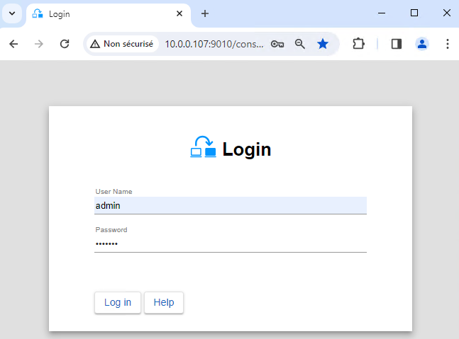
2. Configurer les adresses des nœuds
- Entrez les adresses des nœuds IP, appuyez sur
Tab keypour vérifier la connectivité et remplir les noms des nœuds. Si node1 ou node2 a une couleur rouge, vérifiez la connectivité du navigateur aux deux nœuds et vérifiez le pare-feu sur les deux nœuds pour 🛠️ troubleshooting. - Cliquez ensuite sur
Save and applypour enregistrer la configuration. - Vérifiez le message
Success✅ sur les deux nœuds. - Si la configuration
Failure❌ se produit sur un nœud, ouvrez l’accordéon ▼ pour ce nœud et consultez les messages. Notez que vous pouvez utiliser le SafeKit AI 🤖 pour obtenir de l’aide.
ℹ️ Si vous le souhaitez, vous pouvez ajouter un nouveau LAN and nodes (premier ➕) pour créer un deuxième heartbeat et un réseau de réplication dédié.
ℹ️ Si vous cliquez sur Advanced configuration, le fichier cluster.xml s’affiche. Ce fichier est automatiquement renseigné par la console et déployé sur les nœuds.
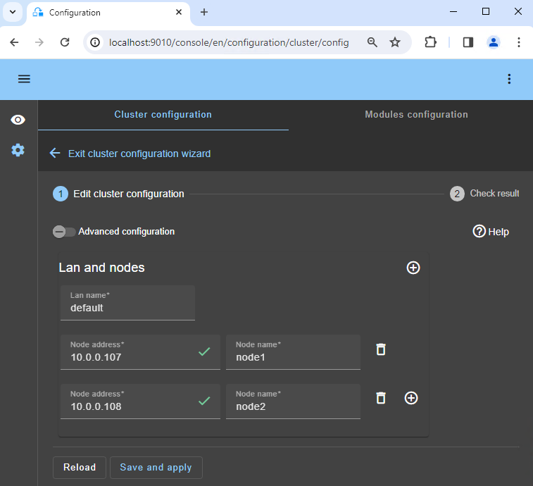
3. Sélectionnez un module
- Dans
New module, cliquez sur le moduleoracle.safe.
ℹ️ Dans le bandeau bleu en haut, node1 représente le nœud de connexion de la console. Ce nœud relaie les requêtes vers node2 lorsque cela est nécessaire.
ℹ️ La console recherche xxx.safe dans le répertoire Application_Modules/generic/ sur le nœud de connexion (node1) si vous y avez placé un module lors de l’installation.
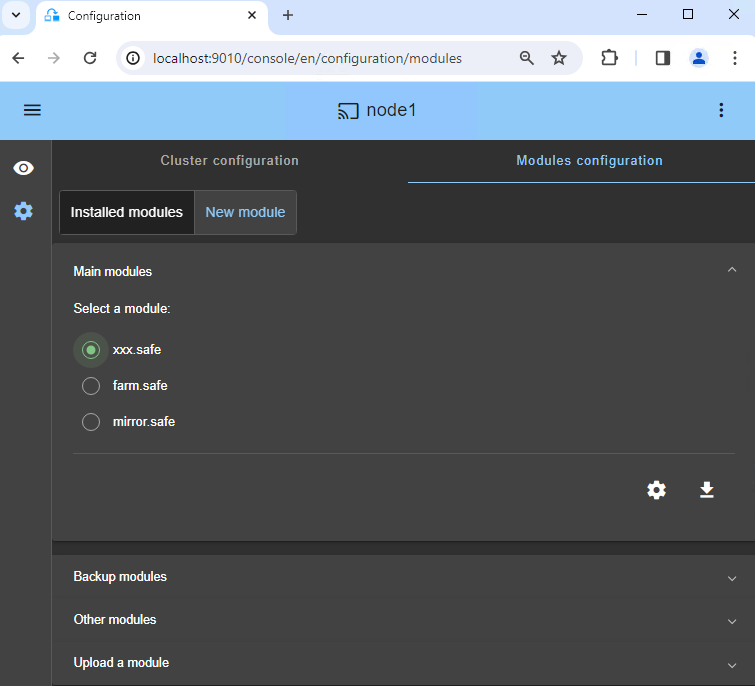
4. Configurez le module
- Dans
Module startup at boot, choisissez un démarrage automatique du module au démarrage sans délai. - Dans
Macros/SERVICES, saisissez les noms de services de votre application, dans l’ordre de démarrage, séparés par des virgules. Voir cette capture d’écran pour un exemple visuel des services Milestone XProtect 🖼️. - Dans
Heartbeat networks, vous devez disposer d’un réseau à pulsation unique sur lequel la réplication est effectuée. Si vous avez ajouté un LAN privé à l’étape 2, vous pouvez configurer deux pulsations avec le flux de réplication sur le LAN privé. - Dans
Virtual IP addresses, entrez une adresse virtuelle IP. Une adresse virtuelle IP est une adresse IP standard dans le même réseau IP (même sous-réseau) que les adresses IP des deux nœuds.
Les clients d’application doivent être configurés avec l’adresse virtuelle IP (ou le nom DNS associé à l’adresse virtuelle IP).
L’adresse virtuelle IP est automatiquement commutée en cas de panne. - Dans
Replicated directories, définissez les chemins des répertoires à répliquer. Vérifiez qu’ils existent sur les deux nœuds et contiennent les données de l’application.
La réplication des données et des journaux est essentielle pour une base de données.
Vous pouvez créer des répertoires répliqués supplémentaires selon vos besoins.
Voir cette capture d’écran pour un exemple visuel de réplication Milestone XProtect SQL 🖼️. - Dans
Checkers, vous pourrez configurer des vérificateurs si nécessaire, tels que la surveillance des processus, des vérificateurs personnalisés, TCP, un ping ou des vérificateurs split-brain.
Par exemple, si un nom de processus est affiché dansMonitored processes/services, il sera surveillé avec une action de redémarrage en cas d’échec. La configuration d’un mauvais nom de processus entraînera l’arrêt du module juste après son démarrage.


ℹ️ Si vous cliquez sur Advanced configuration, le fichier userconfig.xml s’affiche. Ce fichier est automatiquement renseigné par la console et déployé sur les nœuds avec les scripts de redémarrage.
ℹ️ Dans un déploiement cloud, vous n’avez pas besoin de configurer une adresse virtuelle IP dans SafeKit. Le IP virtuel est géré au niveau de l’équilibreur de charge cloud 🛠️ .
ℹ️ Lorsque vous appliquez la configuration SafeKit, le startup type des services est automatiquement défini sur Manual dans les services Windows. Cela garantit que les services ne démarrent pas automatiquement au démarrage du système, mais uniquement au démarrage du module lui-même (il en va de même sur Linux).
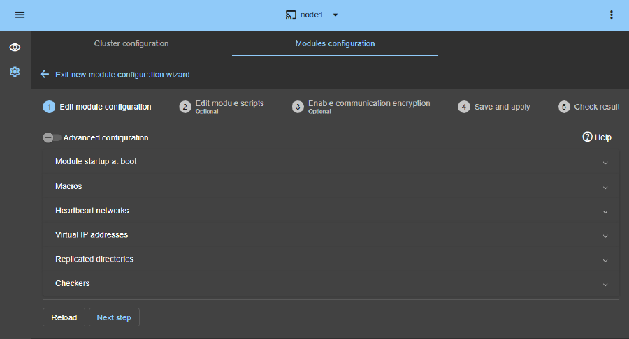
5. Modifier les scripts (facultatif)
- Cette étape est facultative et peut être ignorée dans la plupart des cas, car les scripts de redémarrage sont déjà préconfigurés pour redémarrer les services définis à l’étape précédente.
- Alors, cliquez directement sur
Next step. start_prim.ps1démarre tous les services dans l’ordre spécifié dans la listeSERVICES, tandis questop_prim.ps1arrête tous les services dans l’ordre inverse.- De plus,
start_prim.ps1vérifie le démarrage de chaque service et arrête le module si un service ne démarre pas correctement.
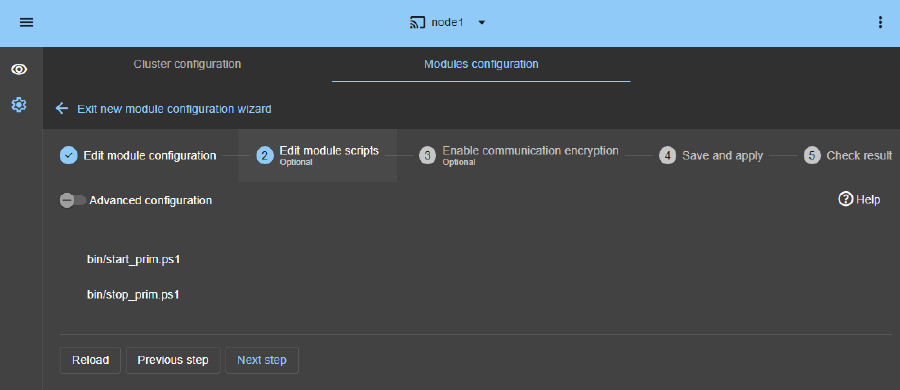
6. Cryptage des communications (facultatif)
- Conservez le cryptage des communications entre les nœuds.
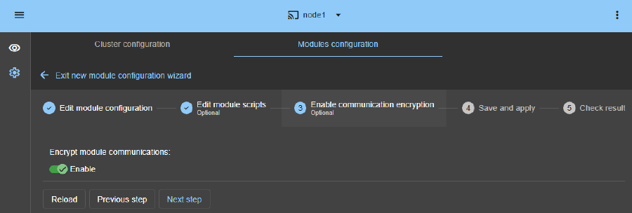
7. Enregistrez et postulez
Save and applyla configuration et les scripts sur les deux nœuds.
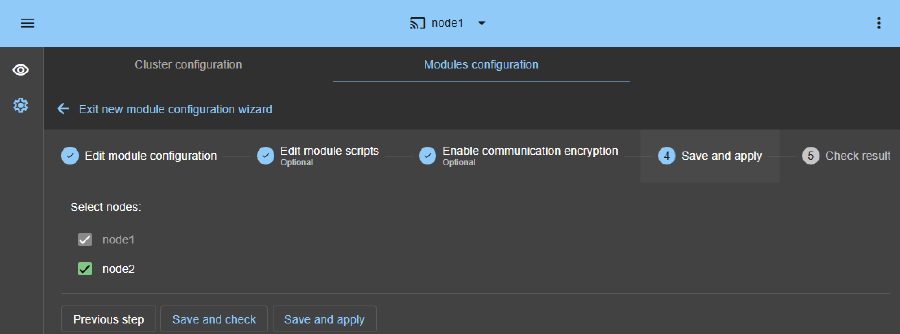
8. Vérifiez la configuration réussie
- Vérifiez le message
Success✅ sur les deux nœuds et cliquez surMonitor modules. - Si la configuration
Failure❌ se produit sur un nœud, ouvrez l’accordéon ▼ pour ce nœud et consultez les messages. Notez que vous pouvez utiliser le SafeKit AI 🤖 pour obtenir de l’aide.
⚠️ Sur Linux, vous pouvez obtenir une erreur à cette étape si les répertoires répliqués sont des points de montage.🛠️ Voir SK-0030 pour résoudre le problème.
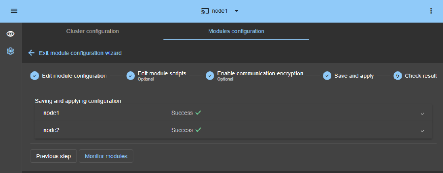
9. Démarrez le nœud avec des données à jour
- Si le nœud 1 possède les répertoires répliqués à jour, sélectionnez-le et ⋯
Force start▶As primary.
Lorsque le nœud 2 sera démarré, toutes les données seront copiées du nœud 1 vers le nœud 2.
⚠️ Si vous faites le mauvais choix, vous courez le risque de synchroniser des données obsolètes sur les deux nœuds.
⚠️ Il est également supposé que l’application Oracle est arrêtée sur le nœud 1 afin que SafeKit installe les mécanismes de réplication puis démarre l’application dans le script start_prim.
⚠️ Utilisez Start pour les démarrages ultérieurs : SafeKit conserve le serveur le plus à jour. Le démarrage du As primary est un démarrage particulier dès la première fois ou lors d’opérations exceptionnelles.
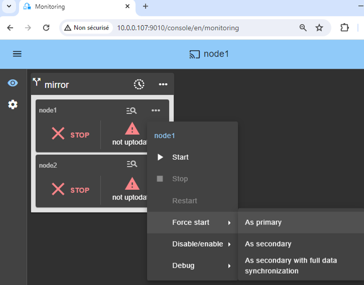
10. Attendez la transition vers ALONE (vert)
- Le nœud 1 doit atteindre l’état ALONE (vert), ce qui signifie que le IP virtuel est défini et que le script
start_prima été exécuté sur le nœud 1.
⚠️ Si ALONE (vert) n’est pas atteint ou si l’application n’est pas démarrée, analysez pourquoi avec le log du module 🖼️ du nœud 1.

- Cliquez sur l’icône 🔍 log de
node1pour ouvrir le journal du module et rechercher des messages d’erreur tels qu’un vérificateur détectant une erreur et arrêtant le module. - Cliquez sur
start_primdans le log : les messages de sortie du script s’affichent à droite et des erreurs peuvent être détectées comme par exemple un service mal démarré. - Utilisez le SafeKit AI 🤖 pour obtenir de l’aide concernant les messages de journal.
⚠️ Si le cluster est dans l’état WAIT (red) not uptodate, STOP (red) not uptodate, arrêtez le nœud WAIT et forcez son démarrage en tant que principal 🖼️.

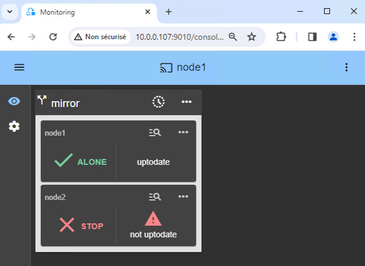
11. Démarrer le nœud 2
- ⋯
Startnœud 2 avec son menu contextuel. - Attendez l’état SECOND (vert).
ℹ️ Le nœud 2 reste dans l’état SECOND (orange) lors de la resynchronisation des répertoires répliqués (copie du nœud 1 vers le nœud 2).
- Cela peut prendre un certain temps en fonction de la taille des fichiers à resynchroniser dans les répertoires répliqués et de la bande passante du réseau.
- Pour voir la progression de la copie, consultez le journal du module 🖼️ et les ressources de réplication 🖼️ du nœud 2. Utilisez le SafeKit AI 🤖 pour obtenir de l’aide sur les messages du journal.


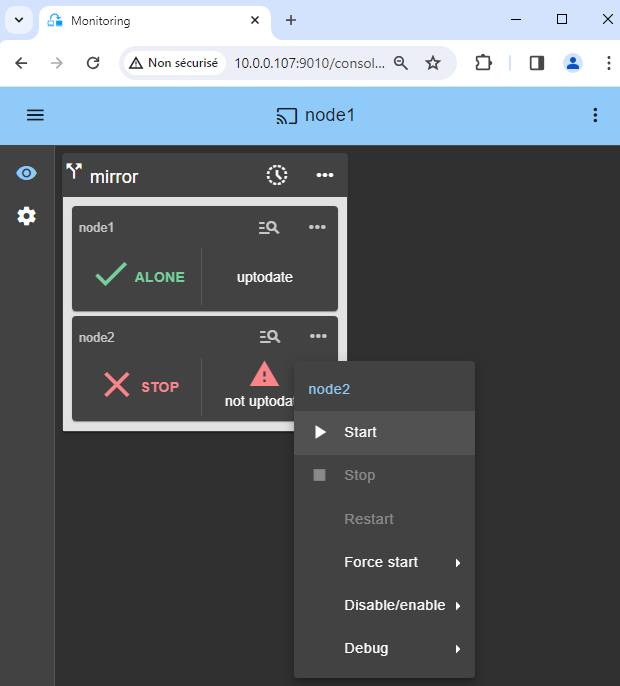
12. Vérifiez que le cluster est opérationnel
- Vérifiez que le cluster est vert/vert avec les services Oracle exécutés sur le nœud PRIM et non exécutés sur le nœud SECOND.
Seules les modifications contenues dans les fichiers sont répliquées en temps réel dans cet état.
⚠️ Les composants clients des services Oracle doivent être configurés avec l’adresse virtuelle IP. La configuration peut se faire avec un nom DNS (si un nom DNS a été créé et associé à l’adresse virtuelle IP).
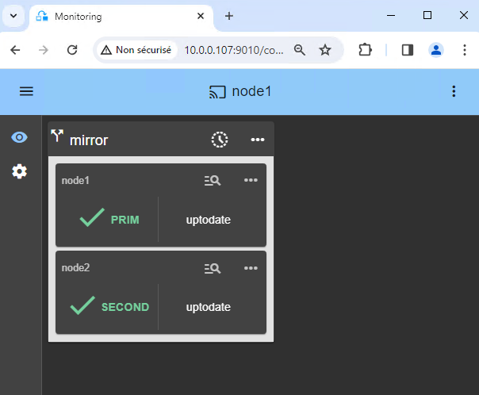
13. Tests
- Arrêtez le nœud PRIM en faisant défiler son menu contextuel et en cliquant sur
Stop. - Vérifiez qu’il existe un basculement sur le nœud SECOND qui doit devenir ALONE (vert).
- Et avec Microsoft Management Console (MMC) sur Windows ou avec des lignes de commande sur Linux, vérifiez le basculement des services Oracle (arrêtés sur le nœud 1 dans le script
stop_primet démarrés sur le nœud 2 dans le scriptstart_prim).
⚠️ Si ALONE (vert) n’est pas atteint sur node2 ou si l’application n’est pas démarrée, analysez pourquoi avec le log du module 🖼️ du nœud 2.

- Cliquez sur l’icône 🔍 log de
node2pour ouvrir le journal du module et rechercher des messages d’erreur tels qu’un vérificateur détectant une erreur et arrêtant le module. - Cliquez sur
start_primdans le log : les messages de sortie du script s’affichent à droite et des erreurs peuvent être détectées comme par exemple un service mal démarré. - Utilisez le SafeKit AI 🤖 pour obtenir de l’aide concernant les messages de journal.
⚠️
- Si tout va bien, lancez un démarrage sur node1, qui resynchronisera les répertoires répliqués depuis node2.
- Si les choses tournent mal, arrêtez node2 et forcez le démarrage en tant que principal 🖼️ de node1, qui redémarrera avec ses données localement saines au moment de l’arrêt.
ℹ️ Trouvez plus de détails, ainsi que des vidéos, dans la formation en ligne SafeKit.
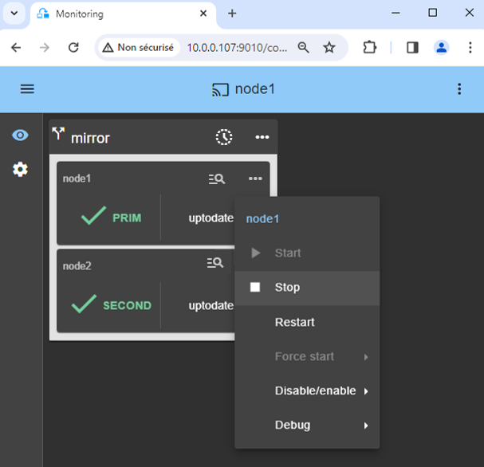
14. Assistance
- Pour obtenir de l’aide, prenez 2 SafeKit
Snapshots(2 fichiers .zip), un pour chaque nœud.
ℹ️ Plus d’informations sur le support ici.
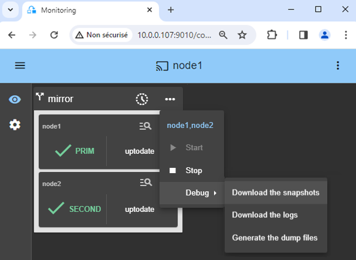
Démonstration de la solution SafeKit mirror
Vidéo SafeKit : Clustering au niveau applicatif (8:47)
Dans cette vidéo, découvrez comment SafeKit implémente un cluster HA miroir sans la complexité d’un SAN. Bien que cette démonstration utilise Microsoft SQL Server, la solution fonctionne de manière identique pour d’autres bases de données et applications.
Chapitres
- 🎬 2 nœuds avec SQL Server (0:32)
- 🎬 Configurer le cluster et le module mirror.safe (3:58)
- 🎬 Démarrer et tester la réplication SQL, la migration, le basculement sur panne (4:17)
Mise en œuvre étape par étape
- 🛠️ Lire le guide de configuration d’un cluster miroir sur Windows
- 🛠️ Lire le guide de configuration d’un cluster miroir sur Linux
🔍 SafeKit Hub de navigation haute disponibilité
** Explorez SafeKit : Fonctionnalités, vidéos techniques, documentation et essai gratuit **
| Type de ressource | Description | Lien direct |
|---|---|---|
| Caractéristiques principales | Pourquoi choisir SafeKit pour une haute disponibilité simple et économique ? | Découvrez pourquoi choisir SafeKit pour une haute disponibilité |
| Cas d’utilisation | Découvrez comment SafeKit garantit la haute disponibilité des infrastructures critiques | Voir tous les cas d’utilisation (logiciels OEM, serveurs Edge, SCADA, etc.) |
| Modèle de déploiement | disponibilité tout-en-un sans SAN : Clustering logiciel sans partage | Voir SafeKit disponibilité tout-en-un sans SAN |
| Stratégies de haute disponibilité | SafeKit : Haute disponibilité de l’infrastructure (VM) vs. Haute disponibilité applicative | Voir SafeKit Haute disponibilité et redondance : VM vs. niveau applicatif |
| Spécifications techniques | Limitations techniques pour SafeKit Clustering | Voir SafeKit Limitations de haute disponibilité |
| Vidéos | SafeKit : Démonstrations de configuration haute disponibilité et de basculement | Voir SafeKit Tutoriels de basculement |
| Architecture | Fonctionnement du cluster SafeKit Mirror (Réplication en temps réel et basculement) |
Voir SafeKit Mirror Cluster : Réplication en temps réel et basculement |
| Architecture | Fonctionnement du cluster SafeKit Farm (Équilibrage de charge réseau et basculement) | Voir SafeKit Farm Cluster : Équilibrage de charge réseau et basculement |
| Avantages concurrentiels | Comparaison : SafeKit vs. Clusters haute disponibilité (HA) traditionnels | Voir SafeKit Comparaison avec les clusters HA traditionnels |
| Ressources techniques | SafeKit Haute disponibilité : documentation, téléchargements et essai | Voir SafeKit Essai gratuit et documentation technique HA |
| Solutions préconfigurées | SafeKit Bibliothèque de modules d’application : Solutions HA prêtes à l’emploi | Voir SafeKit Modules d’application haute disponibilité |